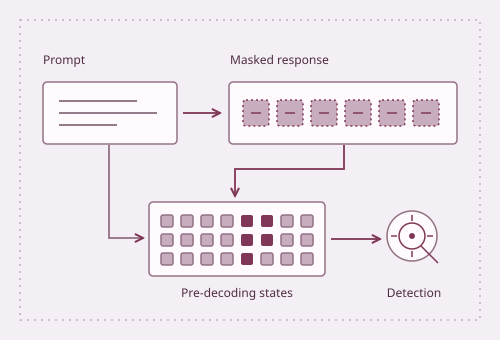
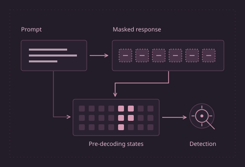
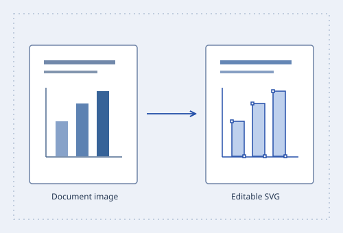
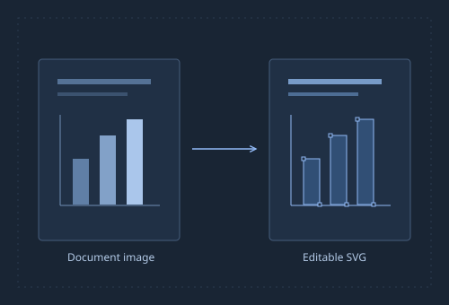
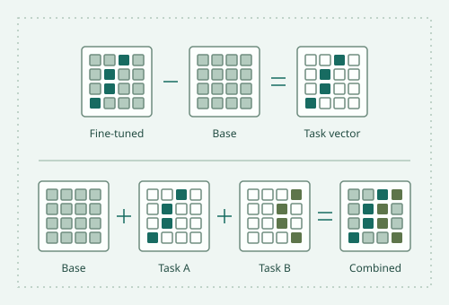
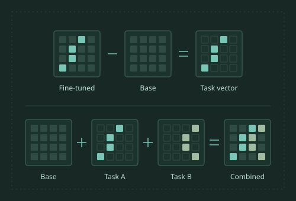

Blogposts
-


Before the First Token: Detecting Jailbreaks in Masked Diffusion LMs
-


Undoing the Screenshot: Making Slides Editable Again
-


When Vision Models Add Up: Task Arithmetic Without Language Supervision